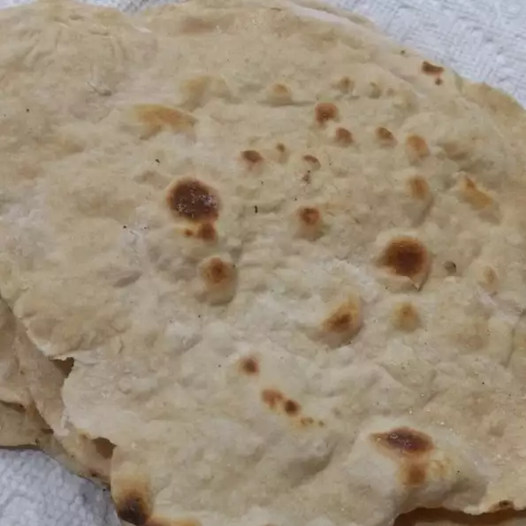

Eggplant Pasta recipe

Description
A an unleavened griddle bread from India which is similar to pita bread. It is also known as roti. Ideally, I use the traditional Indian roti griddle called a 'tava.'
Ingredients
- 2 cups durum wheat flour
- ½ teaspoon salt
- ¾ cup water
- 1 tablespoon vegetable oil
Steps
- In a medium bowl, stir together the flour, salt, water and oil, until the mixture pulls away from the sides. Turn the dough out onto a well floured surface. Knead until smooth and pliable, about 10 minute.
- Preheat an unoiled skillet or tava to medium high heat. Divide dough into 12 equal parts, form into rounds and cover with a damp cloth. Flatten the balls with the palm of your hand, then use a rolling pin to roll out each piece into a 6 to 8 inch diameter round.
- Cook the roti for 1 minute before turning over, then turn again after another minute. The roti should have some darker brown spots when finished. Best served warm.